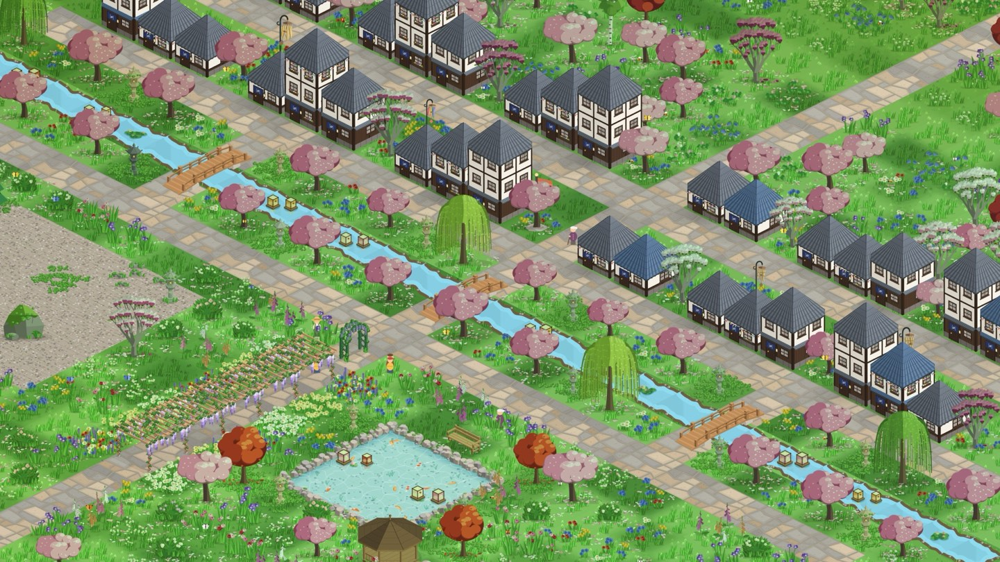

StepHaven vs Pikmin Bloom
StepHaven, the cozy walking game for iPhone, and Pikmin Bloom are two gentle games that run on your steps. One you play on the walk, the other after it. I make StepHaven, so I've kept this to facts you can check.

What's the difference between StepHaven and Pikmin Bloom?
Pikmin Bloom is played on the walk: Pikmin follow you, you plant flowers on a real map and collect Decor Pikmin. StepHaven is played after the walk: your steps become points you spend building your own cozy town, and it doesn't use your location.
Both count steps from Apple Health in the background, so neither needs to be open while you walk. The difference is what the steps turn into, and when you sit down with it.
Side by side
| Pikmin Bloom | StepHaven | |
|---|---|---|
| What you do | Grow and collect Pikmin, plant flowers on the map, send Pikmin on expeditions | Build and decorate a town: paths, gardens, cottages, rivers, railways |
| When you play | Much of it on the walk, with steps also counted in the background | After the walk, in short visits |
| Your location | Used; its App Store listing says it may use location even when the app isn't open | Not used |
| What counts | Steps from Apple Health; wheelchair pushes at half a step each | Steps from Apple Health; wheelchair pushes at two points each; workouts through Ember |
| With friends | Weekly Challenges, Party Walks, mushroom battles | Shared towns of up to four people, each spending their own steps |
| Money | Free, with in-app purchases including coins and storage | Free, no ads; optional StepHaven+ membership and item packs. Steps and points can't be bought |
| Devices | iPhone (iOS 15 or later) and Android | iPhone only, iOS 26.5 or later |
| Made by | Scopely Explore, with Nintendo's Pikmin | One independent developer |
Pikmin Bloom details are from its US App Store listing and wheelchair mode help page, checked on November 11, 2026. Games change, so check the listing before you download.
Choose Pikmin Bloom if…
- You want something to look at and tap while you're out walking.
- You like collecting, and the Pikmin themselves are the draw.
- You want community events and big days when lots of people walk at once.
- You're on Android, or your iPhone can't run iOS 26.5.
Choose StepHaven if…
- You'd rather walk without your phone in your hand and play later, at home.
- The fun part for you is deciding where things go: a lane of cottages, a pond with a bridge, a train looping round the edge.
- You want to build one place together with family or friends, not just compare steps.
- You get around in a wheelchair and want pushes to count fully.
- You'd like a game that doesn't use your location at all.
Can I play both?
Yes. Both read your steps from Apple Health, and neither takes steps away from the other. The same walk can plant flowers in Pikmin Bloom and pay for a cottage in StepHaven.
Which one counts wheelchair pushes better?
Both count pushes from an Apple Watch in wheelchair mode. Pikmin Bloom's help page says one push is converted to 0.5 steps. In StepHaven one push earns two points, where one step earns one, so a typical day of pushing builds about as much as a typical day of walking. More in every kind of moving counts.
Is StepHaven on Android?
No. StepHaven is iPhone only and needs iOS 26.5 or later. Pikmin Bloom is on both iPhone and Android.
Can friends play together in StepHaven like in Pikmin Bloom?
In a different way. Pikmin Bloom has Weekly Challenges, Party Walks and mushroom battles with other players. StepHaven has shared towns: up to four people build in the same town, each spending their own steps. See building a town with friends.
Looking for more like Pikmin Bloom? I've written up games like Pikmin Bloom, sorted by what you like about it, and a longer comparison of walking games for iPhone.
StepHaven: Cozy Town Builder
Free on iPhone. No ads, and your steps stay on your phone.
Download on theApp Store